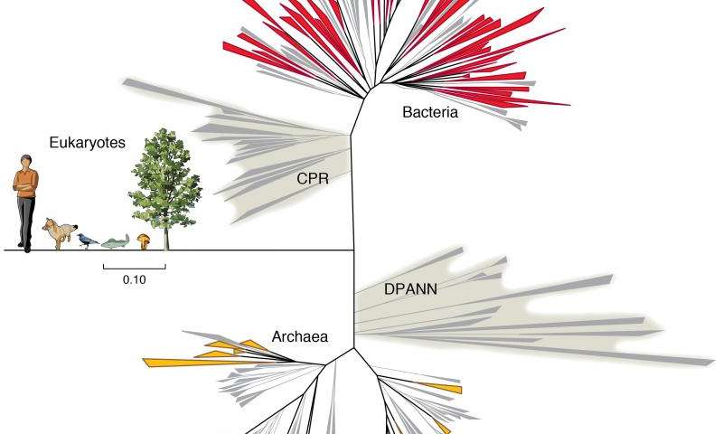

Metagenomic assembly and annotation of 16S ribosomal RNA genes by SPAdes
Scientific advisor:
Sergey Nurk, Algorithmic biology lab
Purpose
Extract 16S rRNA genes and corresponding information from metagenomic assembly
Why?
16S rRNA genes are very important in molecular phylogeny due to slow evolution rates of their regions
One great example [deprecated]

Woese et al. (1990)
Contemporary view
Christopher et al. (2015)
Metagenomics in a nutshell
 https://en.wikipedia.org/wiki/Metagenomics
https://en.wikipedia.org/wiki/Metagenomics
SPAdes 16S rRNA assembly for isolates
| Organism | 16S rRNA copies in genome | Assembled |
|---|---|---|
| Some bacteria | 2-15 | 1+* |
*This number depends on available sequencing information (mate-pair, PacBio reads, etc.)
How to detect 16S rRNA?
- Easy: align known 16S rRNA to assembled contigs;
- Much better: use discriminative model (like HMM) including both 1° and 2° structures.
Source of problems [exclude, probably]
The same1-3: order, 4-11: class, 12: phylum
Correspondence between 16S rRNA in genome and in assembly graph

Bioinformatics reality

Fantastic Ordered List
- One is smaller than...
- Two is smaller than...
- Three!
Tabular Tables
| Item | Value | Quantity |
|---|---|---|
| Apples | $1 | 7 |
| Lemonade | $2 | 18 |
| Bread | $3 | 2 |
Clever Quotes
These guys come in two forms, inline:
“The nice thing about standards is that there are so many to choose from”
and block:
“For years there has been a theory that millions of monkeys typing at random on millions of typewriters would reproduce the entire works of Shakespeare. The Internet has proven this theory to be untrue.”
Intergalactic Interconnections
You can link between slides internally, like this.
Speaker View
There's a speaker view. It includes a timer, preview of the upcoming slide as well as your speaker notes.
Press the S key to try it out.
Export to PDF
Presentations can be exported to PDF, here's an example:
Global State
Set data-state="something" on a slide and "something"
will be added as a class to the document element when the slide is open. This lets you
apply broader style changes, like switching the page background.
State Events
Additionally custom events can be triggered on a per slide basis by binding to the data-state name.
Reveal.addEventListener( 'customevent', function() {
console.log( '"customevent" has fired' );
} );
Take a Moment
Press B or . on your keyboard to pause the presentation. This is helpful when you're on stage and want to take distracting slides off the screen.
Much more
- Right-to-left support
- Extensive JavaScript API
- Auto-progression
- Parallax backgrounds
- Custom keyboard bindings